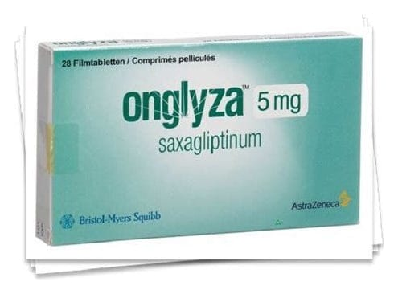

Onglyza 5 mg Film Kaplı Tablet, 28 Adet

Ne için kullanılır
KT · Bölüm 1• ONGLYZA 5 mg tablet pembe, yuvarlak, film kaplıdır. Mavi mürekkep ile, bir tarafında “5”, diğer tarafında “4215” baskısı vardır. ONGLYZA 5 mg tablet 28 tablet içeren alüminyum blister ambalajda kullanıma sunulmuştur. • ONGLYZA tabletleri saksagliptin adlı bir etkin maddeyi içermektedir. Bu ilaç “anti- diyabetikler” olarak adlandırılan bir ilaç grubuna aittir. • Kanınızdaki şeker miktarını kontrol etmeye yardımcı olmak suretiyle etkisini gösterir. • ONGLYZA erişkin hastalarda “tip 2 diyabet” olarak adlandırılan bir diyabet tipi için, hastalığın ağız yoluyla alınan tek bir anti-diyabetik ilaç, diyet ve egzersiz ile yeterince kontrol edilememesi durumunda kullanılmaktadır. • ONGLYZA tek başına ya da insülin veya diğer ağız yoluyla alınan anti-diyabetik ilaçlarla birlikte kullanılır. • Size doktorunuz veya hemşireniz tarafından verilmiş olan diyet ve egzersiz önerilerine uymaya devam etmeniz önemlidir.